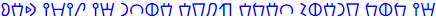
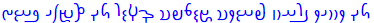
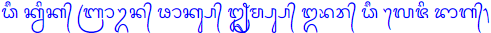
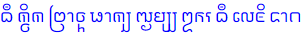
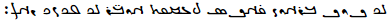
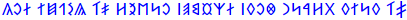
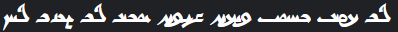
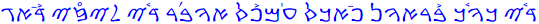

Transliterations of English
Home
Introduction
This section is where I've compiled a list of transliteration attempts I've made for English. Note that some scripts are more suited for English than others, so some imagination should be used to see how I came up with these transliteration systems (and some, such as Shavian are specifically designed for English). Also, further transliterations back into the Latin script will be given below each in orange so you can follow the symbols being used if you're unfamiliar with a certain script. Assume the writing direction is left-to-right unless stated otherwise with the appropriate arrow (right-to-left being indicated by ← and top-to-bottom with ↓; the orange romanizations will always be read left-to-right).
Note that there is inconsistency in the various romanizations because I wanted to follow each script's romanization standards as much as I could (although many scripts have more than one romanization method, so I chose what I felt were the most relevant). Additionally, some scripts used here do not entirely adhere to native rules of punctuation so as to aid the reader in following along with each word used (for example, Burmese and Thai do not add spaces between every word when used for the languages they were designed for, but they do here for English).
Finally, also note that some entries are images and not text. This is because some scripts have minimal or no Unicode support, so the fonts can't always be "pasted in." Credit goes to Keyman and Lexilogos for permitting many of these writing systems to be easily typed out.
List of transliterations I've made
The sentence is "the quick brown fox jumps over the lazy dog" and the transcription I'm basing the transliterations off of is /ðiː kwɪk bɹaʊn fɒks dʒʌmps oʊvəɹ ðiː leɪzɪ dɒg/.
- Ancient North Arabian (←): 
ḏy kwk br'wn f'ks ġmbs 'wfr ḏy lyzy d'g
- Ancient South Arabian (←): 𐩹𐩺 𐩫𐩥𐩫 𐩨𐩧𐩱𐩥𐩬 𐩰𐩱𐩫𐩪 𐩶𐩣𐩨𐩪 𐩱𐩥𐩰𐩧 𐩹𐩺 𐩡𐩺𐩸𐩺 𐩵𐩱𐩴
ḏy kwk br'wn f'ks ġmbs 'wfr ḏy lyzy d'g
- Arabic (←): ذِي كوِك براون فَاكس جٗمپس اوڤْر ذِي ليزى دَاڭ
ḏiy kwik brāwn faāks jŭmps 'wv̊r ḏiy lyzï daāg
- Aramaic (←): 𐡈𐡉 𐡊𐡅𐡊 𐡁𐡓𐡀𐡅𐡍 𐡐𐡀𐡊𐡎 𐡑𐡌𐡐𐡎 𐡀𐡅𐡁𐡓 𐡈𐡉 𐡋𐡉𐡆𐡉 𐡃𐡀𐡂
ṭy kwk br'wn p'ks ṣmps 'wbr ṭy lyzy d'g
- Armenian: Ձէ կւիկ բրաւն ֆոկս ջըմպս օւվր ձէ լեյզի դոգ
Jē kwik brawn foks ǰëmps òwvr jē leyzi dog
- Avestan (←): 
δī kβik braβn fāks jə̄mps ōvər δī lēzi dāg
- Balinese: 
dhī kvik brāvn phāks jhṛmps obhar dhī leji dāg
- Bengali: ধী কুইক ব্রাউন ফাক্স ঝৃম্প্স ওভর ধী লেজি দাগ
dhī kuik brāun phāks jhṛmps obhar dhī leji dāg
- Brahmi: 𑀥𑀻 𑀓𑁆𑀯𑀺𑀓 𑀩𑁆𑀭𑀸𑀯𑁆𑀦 𑀨𑀸𑀓𑁆𑀲 𑀛𑀾𑀫𑁆𑀧𑁆𑀲 𑀑𑀪𑀭 𑀥𑀻 𑀮𑁂𑀚𑀺 𑀤𑀸𑀕
dhī kvik brāvn phāks jhṛmps obhar dhī leji dāg
- Burmese: ဓီ ကွိက ဗြာဝ္န ဖာက္သ ဈ်မ္ပ္သ ဩဘရ ဓီ လေဇိ ဒာဂ
dhī kvik brāvn phāks jhʻmps obhar dhī leji dāg
- Carrier Syllabics: ᙌᐧ ᐠᗔᐠ ᗮᗏᗒ'ᐣ ᶣᐃᐠᔆ ᘗᐧᒼᗮᔆ ᐃᗒᘁᗪᐥ ᙌᐧ ᘥᘐ'ᙄ ᑎᐟ
dzi· kwik brawu'n foks ju·mps owu'vur dzi· leyu'zi dog
- Coptic: Ϯⲓ̄ ⲕⳣⲓⲕ ⲃⲣⲁⳣⲛ ⲫⲱⲝ ϫⲩⲙⲯ ⲟϥⲣ̄ ϯⲓ̄ ⲗⲉⲍⲓ ⲇⲱⲅ
Tiī kwik brawn phôx jumps ofr̄ tiī lezi dôg
- Cyrillic: Ҙі куик браун фокс џымпс оувэр ҙі лейзи дог
Źi kuyk braun foks džïmps ouvèr źi lejzy dog
- Devanagari: धी क्विक ब्राव्न फ़ॉक्स जृम्प्स ओभर धी लेज़ि दॉग
dhī kvik brāvn fôks jṛmps obhar dhī lezi dôg
- Egpytian hieroglyphs: 𓊃𓇋 𓎡𓅱𓏭𓎡 𓃀𓂋𓂝𓅱𓈖 𓆑𓂝𓎡𓋴 𓆓𓅓𓊪𓋴 𓂝𓅱𓏲𓂋 𓊃𓇋 𓄿𓇋𓊃𓏭 𓂧𓂝𓎽 𓄿𓇋𓊃𓏭 𓂧𓂝𓎼
zj kwyk brʿwn fʿks ḏmps ʿwfr zj ljzy dʿg
- Elder Futhark: ᚦᛁ ᚲᚹᛁᚲ ᛒᚱᚨᚹᚾ ᚠᛟᚲᛊ ᛃᛇᛗᛈᛊ ᛟᚢᚠᛇᚱ ᚦᛁ ᛚᛖᛁᛉᛁ ᛞᛟᚷ
þi kwik brawn foks jïmps oufïr þi leizi dog
- Georgian (Asomtavruli): ႻჁ ႵჃႨႵ ႡႰႠჃႬ ႴႭႵႱ ႿჇႫႮႱ ႭჃႥჍႰ ႻჁ ႪႤჂႦႨ ႣႭႢ
dzē kwik brawn poks jəmp's owvær dzē leyzi dog
- Georgian (Mkhedruli): ძჵ ქჳიქ ბრაჳნ ჶოქს ჯჷმფს ოვჽრ ძჵ ლეჲზი დოგ
dzē kwik brawn foks jəmps owvær dzē leyzi dog
- Georgian (Nuskhuri): ⴛⴡ ⴕⴣⴈⴕ ⴁⴐⴄⴣⴌ ⴔⴍⴕⴑ ⴟⴧⴋⴎⴑ ⴍⴣⴅⴭⴐ ⴛⴡ ⴊⴄⴢⴆⴈ ⴃⴍⴂ
dzē kwik brawn poks jəmp's owvær dzē leyzi dog
- Ge'ez: ፂ፞ ኲክ ብራውን ፎክስ ጀ፞ምፕስ ኦውቨር ፂ፞ ሌይዚ ዶግ
ṣ́ī kwik brawn foks jǟmps owvär ṣ́ī leyzi dog
- Glagolitic: Ⰷⰹ ⰽⱜⰻⰽ ⰱⱃⰰⱜⱀ ⱇⱁⰽⱄ ⰼⱛⰿⱂⱄ ⱁⱜⰲⱐⱃ ⰷⰹ ⰾⱔⰸⰻ ⰴⱁⰳ
Dzi kŭyk braŭn foks đümps oŭvĭr dzi lęzy dog
- Gothic: 𐌸𐌴𐌹 𐌺𐍅𐌹𐌺 𐌱𐍂𐌰𐍅𐌽 𐍆𐍉𐌺𐍃 𐍄𐌶𐍅𐌼𐍀𐍃 𐍉𐍅𐍈𐌴𐍂 𐌸𐌴𐌹 𐌻𐌴𐌶𐌹 𐌳𐍉𐌲
þei kwik brawn foks tzwmps owƕer þei lezi dog
- Grantha:

dhī kvik brāvn phāks jhṛmps obhar dhī leji dāg
- Greek: Ϡῑ κϝικ βραϝν φωκς τζῡμπς όϛυρ ϡῑ λεζι δωγ
Šī kwik brawn fôks tzȳmps ów̌yr šī lezi dôg
- Gujarati: ધી ક્વિક બ્રાવ્ન ફૉક્સ જૃમ્પ્સ ઓભર ધી લેજ઼િ દૉગ
dhī kvik brāvn phôks jṛmps obhar dhī lezi dôg
- Hebrew (←): דִי כוִך בּראון פַאכס צָמפּס אובְר דִי ליזֵי דַּאגּ
ḏiy kwik br'wn p̄a'ks ṣ̄ọmps 'wḇər ḏiy lyzēy da'g
- Javanese: ꦣꦷ ꦏ꧀ꦮꦶꦏ ꦧ꧀ꦫꦴꦮ꧀ꦤ ꦦꦴꦏ꧀ꦱ ꦙꦽꦩ꧀ꦥ꧀ꦱ ꦎꦨꦫ ꦣꦷ ꦭꦺꦗꦶ ꦢꦴꦒ
dhī kvik brāvn phāks jhṛmps obhar dhī leji dāg
- Kannada: ಧೀ ಕ್ವಿಕ ಬ್ರೌನ ಫೊಕ್ಸ ಜೃಮ್ಪ್ಸ ಓಭರ್ ಧೀ ಲೇಜಿ಼ ದೊಗ
dhī kvik braun phoks jṛmps ōbhar dhī lēzi dog
- Kawi: 
dhī kvik brāvn phāks jhṛmps obhar dhī leji dāg
- Kharoṣṭhī (←): 𐨢𐨁𐨌 𐨐𐨿𐨬𐨁𐨐 𐨦𐨿𐨪𐨌𐨬𐨿𐨣 𐨥𐨌𐨐𐨿𐨯 𐨗𐨃𐨨𐨿𐨤𐨿𐨯 𐨀𐨆𐨧𐨪 𐨢𐨁𐨌 𐨫𐨅𐨰𐨁 𐨡𐨌𐨒
dhī kvik brāvn phāks jṛmps obhar dhī lezi dāg
- Khmer: ធី ក្វិក ព្រាវ្ន ផាក្ស ឈឹម្ព្ស ឱភរ ធី លេជិ ទាគ
dhī kvik bravn phāks jhẏmps obhar dhī leji dāg
- Lao: ຖີ ຂວິຂ ບຣັວນ ຝາຂສ ຈຶມປສ ໂອຟະຣ ຖີ ເລຊິ ດາກ
thī khwikh bra2on fākhs chưmps ōf2ar thī les2i dāk
- Malayalam: ധീ ക്വിക ബ്രൌന ഫൊക്സ ഝൃമ്പ്സ ഓഭര ധീ ലേജി ദൊഗ
dhī kvik braun phoks jhṛmps ōbhar dhī lēji dog
- Manichaean (←): 
δy kwk br'wn f'ks jmps 'wḇr δy lyzy d'g
- Neo-Tifinagh: ⴺⵢ ⴽⵡⵉⴽ ⴱⵔⴰⵡⵏ ⴼⵄⴽⵙ ⴵⴻⵎⵒⵙ ⵄⵡⵠⵯⵔ ⴺⵢ ⵍⵃⵢⵣⵉ ⴷⵄⴳ
ḍy kwik brawn fʕks djemps ʕwvwr ḍy lḥzi dʕg
- Odia: ଧୀ କ୍ୱିକ ବ୍ରାୱ୍ନ ଫ଼ାକ୍ସ ଜୃମ୍ପ୍ସ ଓଭର ଧୀ ଲେଜ଼ି ଦାଗ.
dhī kwik brāwn fāks jṛmps obhar dhī lezi dāg
- Ogham: ᚛ᚇᚘ ᚉᚃᚔᚉ ᚁᚏᚐᚒᚅ ᚃᚑᚉᚄ ᚊᚗᚋᚚᚄ ᚑᚒᚃᚕᚏ ᚇᚘ ᚂᚓᚔᚎᚔ ᚇᚑᚌ᚜
dia cuic braun focs quimps oufear dia leizi dog
- Ol Chiki: ᱫᱷᱤᱻ ᱠᱶᱤᱠ ᱵᱨᱟᱶᱱ ᱯᱷᱳᱠᱥ ᱡᱷᱚᱻᱢᱯᱥ ᱳᱶᱣᱚᱨ ᱫᱷᱤᱻ ᱞᱮᱭᱡᱤ ᱫᱳᱜ
dhi~ kw̃ik braw̃n phoks jha~mps ow̃var dhi~ leyji dog
- Old Hungarian (←): 
Gyí kűik braűn foksz dzsümps oűver gyí léjzi dog
- Old Italic: 𐌣𐌝 𐌊𐌖𐌉𐌊 𐌁𐌓𐌀𐌖𐌍 𐌚𐌏𐌊𐌔 𐌯𐌭𐌌𐌐𐌔 𐌏𐌖𐌅𐌓 𐌣𐌝 𐌋𐌄𐌉𐌆𐌉 𐌃𐌏𐌂
tsí kuik braun foks ts2ymps ouvr tsí leizi dog
- Old Uyghur (←): 
dy·kwk·br'wn·p'ks·ṣmps·'wbr·dy·lyzy·d'g
- Phoenician (←): 𐤈𐤉𐤟𐤊𐤅𐤊𐤟𐤁𐤓𐤀𐤅𐤍𐤟𐤐𐤀𐤊𐤎𐤟𐤑𐤌𐤐𐤎𐤟𐤀𐤅𐤁𐤓𐤟𐤈𐤉𐤟𐤋𐤉𐤆𐤉𐤟𐤃𐤀𐤂
ṭy·kwk·br'wn·p'ks·ṣmps·'wbr·ṭy·lyzy·d'g
- Samaritan (←): 
ḏiy kwik br'wn p̄a'ks ṣ̄åmps 'wḇăr ḏiy lyz̊y da'g
- Shavian: 𐑞 𐑒𐑢𐑦𐑒 𐑚𐑮𐑬𐑯 𐑓𐑪𐑒𐑕 𐑡𐑳𐑥𐑐𐑕 𐑴𐑝𐑼 𐑞 𐑤𐑱𐑟𐑦 𐑛𐑪𐑜.
ð kwɪk braʊn fɒks dʒʌmps oʊvər ð leɪzɪ dɒg
- Sinhala: ධී ක්වික බ්රෞන ෆොක්ස ඣැම්ප්ස ඕභර ධී ලෙජි දොග
dhī kvik braun foks jhæmps ōbhar dhī lēji dog
- Sogdian (←):

dy kwk br'wn f'ks ṣmps 'wbr dy lyzy d'g
- Syriac (←): ܕܼܸܝ ܟܘܸܟ ܒܪܐܘܢ ܦܼܵܐܟܣ ܨ̈ܡܦܣ ܐܘܒܼܲܪ ܕܼܸܝ ܠܝܙܹܝ ܕܵܐܓ
ḏiy kwik br'wn p̄a'ks ṣ̄ămps 'wḇər ḏiy lyzēy da'g.
- Telugu: ధీ క్విక బ్రౌన ఫొక్స ఝృమ్ప్స ఓభర ధీ లెజి దొగ
dhī kvik braun phoks jhṛmps ōbhar dhī lēji dog.
- Thaana: ޛީ ކްޥިކް ބްރަޥްން ފާކްސް ޖޢމްޕްސް އޯވރް ޛީ ލޭޒި ޑާގް
ḏī kwik brawn fāks jʿmps ōvər ḏī lēzi dāg.
- Thai: ธี กวิก พราวน ผากส ฌๅมปส โอภะร ธี เลชิ ทาค.
dhī kwik brāwn phāks jhṛmps 'obhar dhī leji dāg.
- Tibetan: ཛཱི་ཀྭིཀ་བྲཱཝྣ་ཕཱཀྶ་ཇྀམྤས་ཨོ་འར་ཛཱི་ལེ་ཟི་དཱག
dzī·kwik·brāwn·phāks·jïmps·o·'ar·dzī·le·zi·dāg
- Ugaritic: 𐎏𐎊𐎟𐎋𐎆𐎋𐎟𐎁𐎗𐎀𐎆𐎐𐎟𐎔𐎀𐎋𐎒𐎟𐎙𐎎𐎔𐎒𐎟𐎜𐎁𐎗𐎟𐎏𐎊𐎟𐎍𐎊𐎇𐎛𐎟𐎄𐎀𐎂
ḏy·kwk·br'awn·p'aks·ġmps·'ubr·ḏy·lyz'i·d'ag
- Younger Futhark: ᚦᛁ ᚴᚢᛁᚴ ᛒᚱᛅᚢᚾ ᚠᚭᚴᛋ ᛦᚬᛘᛓᛋ ᚭᚢᚠᚬᚱ ᚦᛁ ᛚᛆᛁᛌᛁ ᛐᚭᚴ
þi kuik braun foks ʀąmps oufąr þi leizi dok
- 'Phags-pa (↓):
ꡒꡞꡖ ꡀꡧꡞꡀ
ꡎꡘꡖꡧꡋ ꡍꡖꡀꡛ
ꡆꡥꡏꡌꡛ ꡡ ꡤꡘ
ꡒꡞꡖ ꡙꡠ ꡕꡞ ꡊꡖꡂ᠃
dzi' kwik
bra'wn pha'ks
jggmps o far
dzi' le zi da'g.